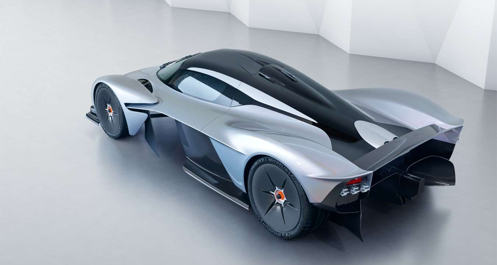

<!DOCTYPE html>
<html lang="en">
<head>
    <meta charset="UTF-8">
    <meta name="viewport" content="width=device-width, initial-scale=1.0">
    <meta http-equiv="X-UA-Compatible" content="ie=edge">
    <title>ASTON MARTIN VALKYRIE</title>
    <link rel="stylesheet" href="css/import.css">
    <script src="https://ajax.googleapis.com/ajax/libs/jquery/1.12.4/jquery.min.js"></script>
    <script src="https://cdnjs.cloudflare.com/ajax/libs/waypoints/2.0.3/waypoints.min.js"></script>
    <script src="js/counterup.js"></script>
    <script src="https://kit.fontawesome.com/ca85dab293.js" crossorigin="anonymous"></script>
    <script>
        $(document).ready(function(){
            $('.counter').counterUp();
        });    
    </script>
</head>
<body>
    <div class="wrap sub sub6">
        <header>
            <h1>toplogo</h1>
            <nav>
                <input type="checkbox" id="overlay-input" class="mui">
                <label for="overlay-input" id="overlay-button" class="fas fa-bars mui fa-2x"></label>
                <div id="overlay">
                    <ul>
                        <li><a href="index.html">HOME</a></li>
                        <li><a href="sub1.html">DBX</a></li>
                        <li><a href="sub2.html">VANTAGE</a></li>
                        <li><a href="sub3.html">DB11</a></li>
                        <li><a href="sub4.html">DBS SUPERLEGGERA</a></li>
                        <li><a href="sub5.html">RAPIDE AMR</a></li>
                        <li><a href="sub6.html" class="active">ASTON MARTIN VALKYRIE</a></li>
                    </ul>
                </div>
            </nav>
        </header>
        <section>
            <div class="spectArea">
                <h2></h2>
                <dl>
                    <dt>UNDISCLOSED</dt>
                    <dd>TOP SPEED</dd>
                </dl>
                <dl>
                    <dt><strong class="counter">542</strong> <small>BPH</small></dt>
                    <dd>POWER</dd>
                </dl>
                <dl>
                    <dt>UNDISCLOSED</dt>
                    <dd>0~62MPH</dd>
                </dl>
            </div>
            <div class="mainText">
                <h2><small>VALKYRIE</small><br>POWER OF THE GODS</h2>
                <p>An incredibly special car with an equally remarkable name. One that immediately evokes connotations of power and honor, of being chosen by the Gods.</p>
                <p>Only 150 road cars will be made. Valkyrie is Aston Martin’s first ever hypercar and it leaves nothing in reserve.</p>
            </div>
            <ul class="detailIMG">
                <li>
                    
                </li>
                <li>
                    
                </li>
                <li>
                    
                </li>
                <li>
                    
                </li>
                <li>
                    
                </li>
                <li>
                    
                </li>
            </ul>
            <div class="detailText">
                <dl>
                    <dt>RADICAL AERODYNAMICS</dt>
                    <dd>A striking aerodynamic exterior and an open underfloor maximizes downforce and harnesses the atmospherearound Valkyrie. The all-carbon fiber bodywork carries our trademark upper grille outline, before forming intoa radical body utterly honed for performance.</dd>
                </dl>
                <dl>
                    <dt>TRACK PERFORMANCE ON THE STREETS</dt>
                    <dd>Valkyrie comes as close as possible to a Formula One™ car without being restricted to the track. Its technologycomes directly from our involvement with Red Bull Racing Advanced Technologies and has all the hallmarks ofour crafted luxury.</dd>
                </dl>
                <dl>
                    <dt>BEYOND FORMULA</dt>
                    <dd>The advanced mid-mounted powertrain takes its cue from F1™. Throttle response of the V12 is honed for aseductive sound; the hybrid tech gives an immediacy of acceleration.</dd>
                </dl>
                <dl>
                    <dt>A NEW BREED</dt>
                    <dd>Otherworldly performance comes from the 6.5-litre V12 engine developed with Cosworth. Starkly differentfrom a traditional hybrid system, the V12 is torque-enhanced during take-off and uses the electric motor fora power boost.</dd>
                </dl>
            </div>
            <ul>
                <li>
                    
                </li>
                <li>
                    
                </li>
                <li>
                    
                </li>
            </ul>
        </section>
        <footer>
            <h2>footer logo</h2>
            <ul>
                <li><a href="sub1.html">DBX</a></li>
                <li><a href="sub2.html">VANTAGE</a></li>
                <li><a href="sub3.html">DB11</a></li>
                <li><a href="sub4.html">DBS SUPERLEGGERA</a></li>
                <li><a href="sub5.html">RAPIDE AMR</a></li>
                <li><a href="sub6.html">ASTON MARTIN VALKYRIE</a></li>
            </ul>
        </footer>
    </div>
</body>
</html>